Les fondements des équipements
Beaucoup sous-estiment les équipements. Certains voient ça comme une décoration ou un petit plus négligeable en combat, mais ça va bien plus loin que ça.
Vous avez remarqué ? Toutes les personnes qui ont un rang A ou supérieur en combat classés ont des équipements soigneusement optimisés, sans aucune exception.
Les équipements sont en fait très utiles. Le temps passé à rechercher les équipements utiles dans votre configuration vous sera grandement compensé par les victoires qui suivront.
Dans ce tutoriel je vais essayer de vous donner une marche à suivre pour avoir une bonne combinaison d’équipements dans votre configuration.
Je vous conseille pour la suite du tutoriel de vous munir d'une feuille ou de votre appli de notes pour marquer les différents points pour votre cas en suivant l'ordre des titre de ce tutoriel. C'est une structure qui vous permettra d'y voir plus clair et de composer votre équipement en gagnant du temps puisque vous aurez identifié les besoins.
La configuration
J’ai employé ce mot plusieurs fois, mais que veut-il dire ? C’est simple. La configuration, c’est la somme de votre arme, de votre façon de jouer et de votre équipement. Ces trois points sont essentiels et fonctionnent toujours ensemble.
Pour ce tutoriel, on construira ensemble un équipement optimisé pour une des armes des plus classiques : le Liquidateur Jr.
Votre arme
Pour optimiser votre équipement, il faut décider quelles armes vous voulez jouer. Par exemple, je suis nul avec un Aérogun ou un Blaster, donc j'exclus directement ces armes de mon style de jeu.
On préfèrera utiliser certains équipements uniquement pour certaines armes. Par exemple, vous pouvez avoir des chaussures qui augmentent la durée de votre arme spéciale, mais il est inutile de les jouer avec un spécial comme comme le missile tornades.
Cette partie est importante, car en étudiant votre arme vous allez améliorer votre façon de la jouer.
Étude de l'arme principale
Donc, pour notre Liquidateur Jr. ...
- Portée : Courte portée, il faudra faire attention aux armes qui ont une meilleure portée et qui peuvent vous gérer à distance, et il faudra s'approcher très souvent par surprise ou par derrière.
- Cadence : Bonne mais avec moins de dégâts en contrepartie.
- Rayon de tir : Pas direct et moins précis, donc il faut viser bien pour toucher la cible.
- Capacité à peindre : Très bonne.
Étude de l'arme secondaire
Bombe Splash, un classique.
- Fonctionnement : Lance une bombe triangulaire qui explose 1 seconde après avoir touché le sol.
- Point clé lors de l'utilisation : Faire rebondir sur le sol pour surprendre l'adversaire.
- Utilité : Frappe en éclaireur ou dans une zone avec peu de visibilité. Permet de tenir les ennemis à distance.
- Faiblesse : Prévisible et échappable facilement.
Étude de l'arme spéciale
Dans notre cas, le Bouclier.
- Fonctionnement : Une fois activé, l'utilisateur est invincible pendant une courte période.
- Point clé lors de l'utilisation : Peut être partagé avec vos coéquipiers, cependant si quelqu'un vous tire dessus cela peut vous pousser dans l'eau ou dans le vide.
- Utilité : Se protéger lors d'une attaque surprise de l'adversaire, démarrer une poussée en équipe pour obtenir une zone clé.
- Faiblesse : Sortie de bouclier dangereuse.
Maintenant que l'arme a été expliqué de fond en comble, on peut passer à la seconde partie : Votre façon de jouer.
La façon de jouer
Chacun a sa façon de jouer dans Splatoon, personne ne peut remettre en question cela. Par contre, si cette façon ne fonctionne que très peu souvent, il serait peut-être judicieux de ne pas avoir peur d'accepter que ça ne fonctionne pas et de la remettre en question.
C'est la partie ou vous évaluez l'utilisation de votre arme. Par exemple, un pinceau est joué en rush les 30 premières secondes pour créer une trace de peinture pour que votre équipe arrive plus vite au point clé en calanage. Ou le badigeonneur doit être joué en soutien/défense et pas au corps à corps. Chaque arme a une position bien précise et vous perdez en potentiel si vous n'essayez pas de la suivre.
Pour le Liquidateur Jr., notre utilisateur test joue trop en solo et ne reste pas aux côtés de ses co-équipiers. Il active le bouclier uniquement quand il est seul et joue en lead alors que son arme ne le permet pas. Il utilise la bombe pour peindre au lieu du tir principal. Il perd 80% de ses matchs parce que l'équipe adverse peint toujours son camp et il n'a pas le temps de repeindre, pourtant il a essayé de les contenir dans leurs spawn.
Notre utilisateur test aime apparemment beaucoup jouer en solo. Malheureusement, Splatoon est un jeu en équipe, et si il ne change pas sa façon de jouer, avoir une bonne arme ou un bon équipement n'y changera rien.
Les points que utilisateur test peut corriger très facilement :
- Toujours se déplacer avec un coéquipier car sans le bouclier, les 1vs1 ne seront pas en sa faveur.
- Partager le bouclier avec son équipe.
- Utiliser les bombes uniquement pour limiter le mouvement de l'adversaire.
- Regarder la carte dès qu'il n'est pas menacé.
- Se téléporter sur un allié en difficulté quand quelqu'un demande du secours.
- Son arme est très bonne pour peindre, moins pour faire des kills. Donc il faut prendre le rôle de celui qui peint et qui assiste, pas celui qui tue.
Les équipements
Nous touchons enfin au dernier pilier de notre configuration ! Les équipements, c'est le nom que l'on donne aux chapeaux, chaussures et autres tenues que l'on peut porter. Ces tenues ont pour but de personnaliser l'apparence du joueur, mais aussi d'utiliser des bonus.
Les bonus
Les bonus sont des éléments qui ne sont obtenus que dans les équipements, et ils permettent de modifier votre expérience de jeu et le comportement de votre personnage. Par exemple, le bonus chasse-piège permet d'avoir indiqué à l'écran les bombes, les mines et les traqueurs, et le bonus Encrémenteur (pr.) permet à votre arme de consommer moins d'encre quand vous tirez.
Les bonus sont extrêmements utiles et redoutables une fois compris, maitrisés et regroupés.
Bonus cumulables et non-cumulables
Certains bonus ne sont pas cumulables, c'est à dire qu'ils sont exclusifs à certains équipement et ne peuvent pas être obtenus par la montée de niveau d'un équipement ou la rechange via Kipik.
Par exemple, Ninjalamar n'est disponible que sur 5 vêtements, donc si vous voulez l'inclure dans votre combinaison, il vous faudra vous procurer l'un des 5 vêtements.
Les bonus principaux
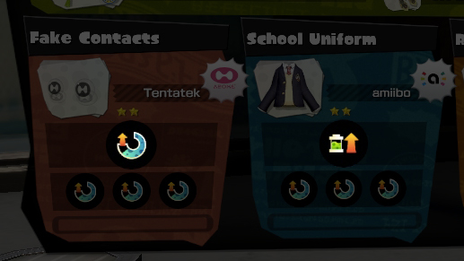Chaque pièce d'équipement possède un slot principal, celui qui détermine le bonus principal d'une pièce d'équipement. Par exemple, le "Casque de vision nocturne" a comme bonus principal Turbo-Calamar, qui permet de nager plus vite.
Les bonus secondaires
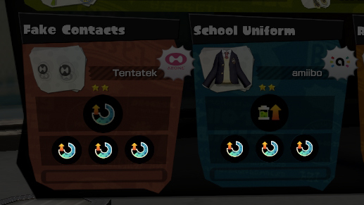Vous avez remarqué ces petites étoiles à côté d'un vêtement ? Elles indiquent le nombre de slots secondaires de votre équipement. Les équipements à 3 étoiles coutent plus cher que ceux à 1 étoile, mais vous pouvez faire rajouter des slots en parlant à Kipik.
3 bonus secondaires identiques équivaut à peu près à 1 bonus principal.
Les marques
Les marques sont très importantes. Selon la marque de votre vêtement, votre vêtement peut avoir des bonus avec plus de chances d'apparaitre et certains avec moins de chances d'apparaitre.
Un vêtement avec la marque Friture aura plus de chances d'avoir Encrémenteur (sec.) en bonus secondaire, mais moins de chances d'avoir Levée d'encre. A vous de décider quels bonus vous avez besoin en bonus secondaire et choisir votre marque en fonction de ces bonus.
Cerner votre besoin
Avant de choisir son équipement, il faut savoir ce que vous avez besoin, et c'est possible qu'en étudiant son arme et sa façon de jouer.
Le rôle du Liquidateur Jr. étant de peindre le plus possible et de couvrir ses alliés avec le bouclier, il faut donc se concentrer sur quelques bonus utiles dans ces domaines.
On pourra utiliser Encrémenteur (pr.) pour dépenser moins d'encre, Levée d'encre pour récupérer rapidement de l'encre, Jauge Spéciale +, Durée spéciale + et Baisse Spéciale - pour optimiser au maximum l'utilisation du bouclier.
Trouver les bons équipements
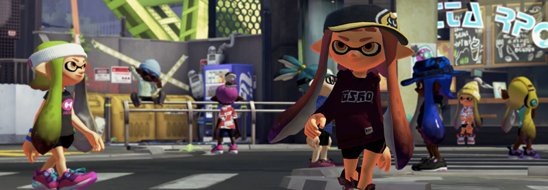Pas mal d'équipements vont correspondre aux critères, à vous de prendre le temps de choisir la meilleure combinaison.
Si vous avez besoin d'un bonus non cumulable comme Furtivité, parce que comme moi vous détestez au plus haut point être localisé, partez de là puis construisez autour.
Heureusement, ce guide regroupe déjà tout pour vous. Vous avez juste a regarder le bonus principal, le bonus secondaire commun et le nom de l'équipement à obtenir.
Partez des bonus principaux et regardez quels équipements peuvent être utiles. Puis faites une liste et ensuite c'est l'affaire d'un petit peu de temps avant de trouver la bonne combinaison.
Si on construit notre combinaison autour de l'utilisation du bouclier :
| Visuel | Nom | Bonus principal | Bonus commun |
|---|---|---|---|
| 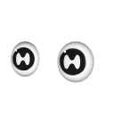 | Lentilles sans correction |  |
|
| 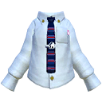 | Chemise cravate | |
|
| 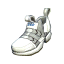 | Flèches blanches | |
|
Si on construit notre combinaison autour de la disponibilité de l'encre :
| Visuel | Nom | Bonus principal | Bonus commun |
|---|---|---|---|
| 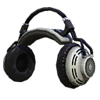 | Casque pro | |
|
| 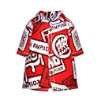 | Chemisettes à logos | |
|
| 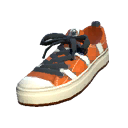 | Tennis Poisson-Clown | |
|
De cette façon, on a une combinaison optimisée pour la peinture et l'utilisation du bouclier.
Garder aussi à l'esprit que certains modes auront un effet drastique sur votre choix de bonus. Par exemple, beaucoup d'encre avec Levée d'encre et Encrémenteur (pr.) semble idéal mais en Expédition Risquée, c'est pas vraiment utile. D'autres bonus peuvent être plus utiles. Essayez de créer votre combinaison de façon à ce que certains éléments inhérents à certains modes soient interchangeables. Cela prend plus de temps mais ça vaut le coup!
Kipik
Au fond de l'allée, il vous permettra d'ajouter des slots dans vos équipements ou de changer totalement les bonus secondaires de vos équipements. Voila cependant il y a un petit soucis : Kipik adore les super coquillages, et il utilisera ça en priorité sur la monnaie.
Utilisez uniquement vos super coquillages pour changer aléatoirement votre combinaison de bonus secondaires. Utilisez votre monnaie avant le Festival pour débloquer les slots de vos équipements au maximum.
Gérer sa garde-robe
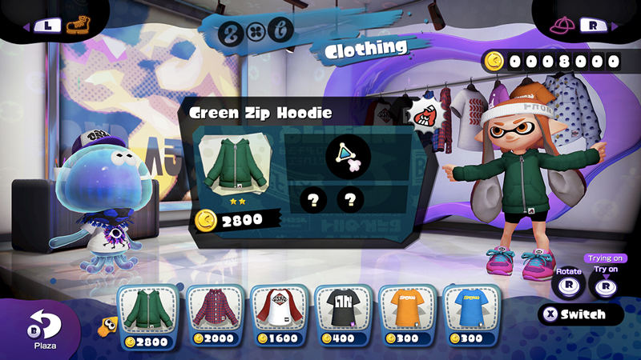Achetez toutes les pièces d'équipements. En faisant quelques parties en ligne par jour, ça revient à pas si cher et vous serez sur de ne pas avoir de difficulté à trouver ce qu'il vous faut.
Si vous avez affronté quelqu'un en ligne avec un très bon équipement, vous pouvez le commander sur la place de Chromapolis après le match.
Obtenir les fonds
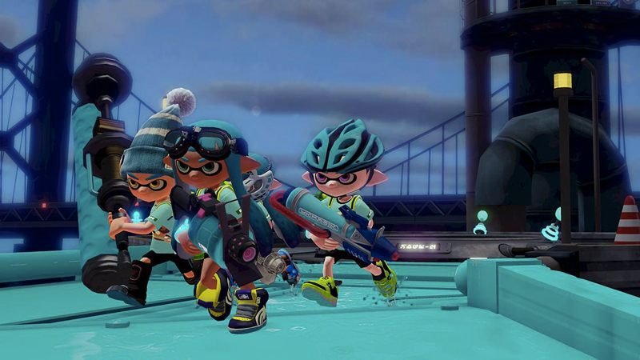Le Festival est LE moment le plus important pour vous. Essayez de deviner quelle équipe va gagner et mettez vous de son côté. Si vous arrivez au rang le plus haut, le gagnant reçoit 24 super coquillages et le perdant 18. Et oui, ça compte. 6 super coquillages de différence équivaut à 180 000 pièces. Et 24 super coquillages 720 000 pièces. Et c'est donné gratuitement, c'est sérieusement une excellente affaire.
Conclusion
Voila, j'ai fait de mon mieux pour vous expliquer tout ce qu'il y a à savoir sur les équipements. J'espère que ce guide aura été utile et compréhensible pour tous.
Bon jeu, et... STAY FRESH!